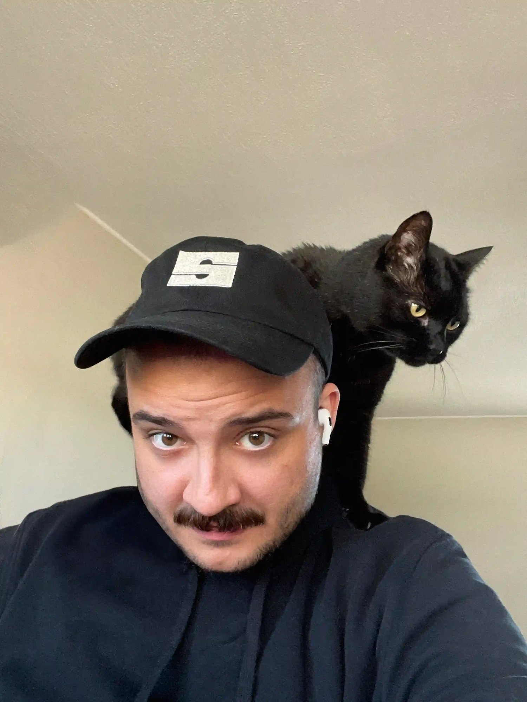

Hey there, I'm Justin. I'm a lifelong creative problem solver, currently working at Supper.
In the past, I've been called a designer and filmmaker. Now, my world revolves around digital marketing and building new possibilities with artificial intelligence.
In my free time, I enjoy obsessing over music, tending to my garden, and spending time outdoors.
One thing I'm incredibly proud of is achieving over 20 million lifetime views on YouTube.
- The companies that will move fastest in the next ten years with AI are the ones with defined, documented processes.
- The best, and often most effective, advertising doesn't look like advertising. It looks like something posted on your friend's personal profile.
- Carnivorous plants like Nepenthes are some of the most fascinating organisms on the planet. Currently, I'm trying to grow one of my own.
- We are living through the best time in history to be making things online.
- This album is one of the best I've heard in awhile.
- In a world where AI can fabricate anything, rawness and authenticity become the scarcest resources. The creators who will win the day will make you feel like you actually know them over anything else.